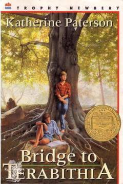

BTIkki yolg'iz bolaning sirli o'rmonda yaratgan sehrli olami va do'stligi haqidagi ta'sirli hikoya.
Maktab o'quvchilari Jess va Leslie o'rmonda Terabithia nomli sehrli qirollikni barpo etishadi va sirli olamda qirol va qirolicha bo'lishadi. Biroq kutilmagan fojia sodir bo'lib, Jess do'stining yo'qotilishiga bardosh berishi va uning jasoratidan kuch olishi kerak bo'ladi. Ushbu asar do'stlik, tasavvur kuchi va hayotiy sinovlar haqida hikoya qiladi.